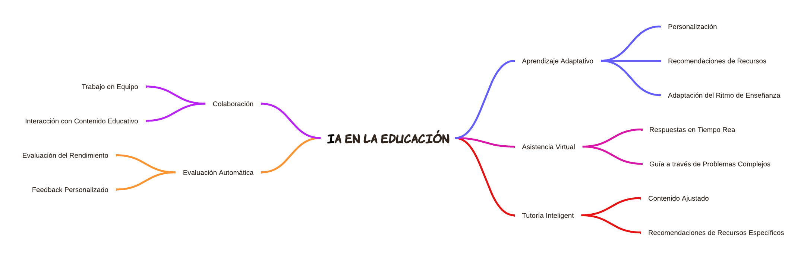

En la fase de Idear, nuestro objetivo fue generar una amplia gama de ideas creativas y posibles soluciones para abordar el problema definido en la fase anterior. Utilizamos diversas técnicas de ideación para fomentar la creatividad y la innovación, y seleccionamos las ideas más prometedoras para desarrollarlas en las fases siguientes.
Para la generación de ideas, realizamos una sesión de brainstorming con nuestro equipo.
Utilizamos técnicas como SCAMPER, mapas mentales y role playing para explorar diferentes
enfoques y perspectivas sobre el problema. A continuación, se presentan algunas de las ideas
generadas:
1. Plataforma de aprendizaje adaptativo que utiliza IA para personalizar el contenido educativo
según las necesidades individuales de cada estudiante.
2. Asistente virtual que proporciona asistencia en tiempo real para responder preguntas y guiar
a
los estudiantes a través de problemas complejos.
3. Sistema de tutoría inteligente que ajusta el contenido según el progreso del estudiante y
ofrece
recomendaciones de recursos específicos.
4. Herramienta de colaboración entre estudiantes que facilita el trabajo en equipo y la
interacción
con el contenido educativo.
5. Plataforma de evaluación automática que utiliza IA para evaluar el rendimiento de los
estudiantes y proporcionar feedback personalizado.
6. Aplicación de mentoría virtual que conecta a los estudiantes con mentores expertos en
diversas
materias utilizando IA para emparejar según intereses y necesidades.
7. Simulador de laboratorio virtual que utiliza IA para recrear experimentos y prácticas de
laboratorio, permitiendo a los estudiantes aprender de manera práctica y segura.
8. Plataforma de análisis de datos académicos que utiliza IA para identificar patrones y
tendencias
en el rendimiento estudiantil, ayudando a los educadores a tomar decisiones informadas.
9. Herramienta de planificación de estudios que utiliza IA para crear horarios de estudio
personalizados basados en las metas y disponibilidad de los estudiantes.
10. Sistema de gamificación del aprendizaje que utiliza IA para crear experiencias de
aprendizaje
interactivas y motivadoras a través de juegos y desafíos educativos.
1. Técnica SCAMPER
SCAMPER es una técnica de creatividad que utiliza una serie de preguntas para estimular la
generación de ideas. Las preguntas se centran en siete áreas: Sustituir, Combinar, Adaptar,
Modificar, Poner en otros usos, Eliminar y Reorganizar.
Pasos para utilizar SCAMPER:
1. Sustituir: ¿Qué parte del proceso, producto o servicio puede ser sustituida por otra
cosa?
Ejemplo: ¿Podemos sustituir las sesiones de tutoría en persona por tutorías virtuales asistidas
por IA?
2. Combinar: ¿Qué pasaría si combinamos esta idea con otra para crear algo nuevo?
Ejemplo: ¿Podemos combinar la evaluación automática con la gamificación para hacer que las
evaluaciones sean más interactivas y atractivas?
3. Adaptar: ¿Qué parte del proceso, producto o servicio puede ser adaptada para
mejorar?
Ejemplo: ¿Podemos adaptar la plataforma de aprendizaje adaptativo para incluir simulaciones de
laboratorio virtuales?
4. Modificar: ¿Qué parte del proceso, producto o servicio puede ser modificada para
mejorar?
Ejemplo: ¿Podemos modificar el asistente virtual para que también ofrezca mentoría
personalizada?
5. Poner en otros usos: ¿Qué otros usos podemos darle a este proceso, producto o
servicio?
Ejemplo: ¿Podemos utilizar la herramienta de colaboración entre estudiantes para proyectos
extracurriculares?
6. Eliminar: ¿Qué parte del proceso, producto o servicio puede ser eliminada para
simplificar?
Ejemplo: ¿Podemos eliminar las evaluaciones tradicionales y reemplazarlas completamente con
evaluaciones automáticas?
7. Reorganizar: ¿Qué parte del proceso, producto o servicio puede ser reorganizada para
mejorar?
Ejemplo: ¿Podemos reorganizar el sistema de tutoría para que se base en el progreso en tiempo
real del estudiante?
2. Mapas Mentales
Los mapas mentales son una herramienta visual que ayuda a organizar y estructurar ideas de
manera jerárquica. Se comienza con una idea central y se ramifican sub-ideas relacionadas.

Para la fase de Idear, utilizamos diversas metodologías para fomentar la creatividad y la generación de ideas. Entre estas metodologías se incluyen el brainstorming, SCAMPER y mapas mentales. Estas técnicas nos permitieron explorar diferentes enfoques y perspectivas sobre el problema.
Después de generar una amplia gama de ideas, evaluamos cada una de ellas basándonos en criterios de viabilidad, impacto y alineación con las necesidades del usuario. Utilizamos una matriz de priorización para seleccionar las ideas más prometedoras para desarrollarlas en las fases siguientes.
Las ideas seleccionadas fueron desarrolladas en detalle, considerando los aspectos técnicos,
funcionales y de usabilidad. A continuación se presentan las ideas seleccionadas y su
desarrollo:
Idea Seleccionada 1:
Plataforma de aprendizaje adaptativo que utiliza IA para
personalizar el
contenido educativo según las necesidades individuales de cada estudiante. Desarrollo: Esta
plataforma analizará los datos de rendimiento de los estudiantes y ofrecerá contenido
personalizado y recomendaciones de recursos específicos.
Idea Seleccionada 2:
Asistente virtual que proporciona asistencia en tiempo real
para responder
preguntas y guiar a los estudiantes a través de problemas complejos. Desarrollo: El asistente
virtual utilizará procesamiento de lenguaje natural para interactuar con los estudiantes y
ofrecer mentoría personalizada.
Nikolas Quicasan: Me parece que la idea de la plataforma de aprendizaje adaptativo es
excelente.
Creo que personalizar el contenido educativo según las necesidades individuales de cada
estudiante puede realmente mejorar la experiencia de aprendizaje. Sin embargo, me preocupa que
algunos estudiantes puedan sentirse abrumados por la cantidad de datos que la plataforma
recopila sobre ellos. Sería importante incluir opciones de privacidad y permitir a los
estudiantes controlar qué datos se recopilan y cómo se utilizan.
Andrés Ocaña: La idea del asistente virtual que proporciona asistencia en tiempo real es
muy
innovadora. Veo mucho potencial en esta herramienta para ayudar a los estudiantes
a resolver dudas y problemas complejos fuera del horario de clases. Sin embargo, me gustaría
asegurarme de que el asistente virtual no reemplace la interacción humana por completo. Sería
útil si el asistente pudiera también fomentar la participación en foros de discusión o grupos de
estudio para mantener un equilibrio entre la tecnología y la interacción humana.
Keppler Sánchez: Ambas ideas seleccionadas son muy prometedoras. La plataforma de aprendizaje
adaptativo y el asistente virtual tienen el potencial de transformar la educación. Sin embargo,
es fundamental asegurarse de que estas herramientas sean accesibles para todos los estudiantes,
incluidos aquellos con discapacidades. Recomiendo incluir funcionalidades de accesibilidad, como
soporte para lectores de pantalla y opciones de personalización de la interfaz, para garantizar
que todos los estudiantes puedan beneficiarse de estas innovaciones.
Basándonos en el feedback recibido, refinamos las ideas seleccionadas para asegurar que cumplan con los requisitos y expectativas de los usuarios. Este proceso de refinamiento incluyó ajustes en las funcionalidades, interfaces y métodos de implementación.
La fase de Idear nos permitió explorar una variedad de ideas creativas y seleccionar las más prometedoras para abordar el problema definido en la fase anterior. Este proceso nos ayudó a identificar soluciones innovadoras que pueden personalizar la educación y mejorar la experiencia de aprendizaje de los estudiantes, al tiempo que abordan las preocupaciones sobre el uso indebido y la dependencia excesiva de la IA. Estas ideas seleccionadas servirán como base para el desarrollo de prototipos en la siguiente fase.